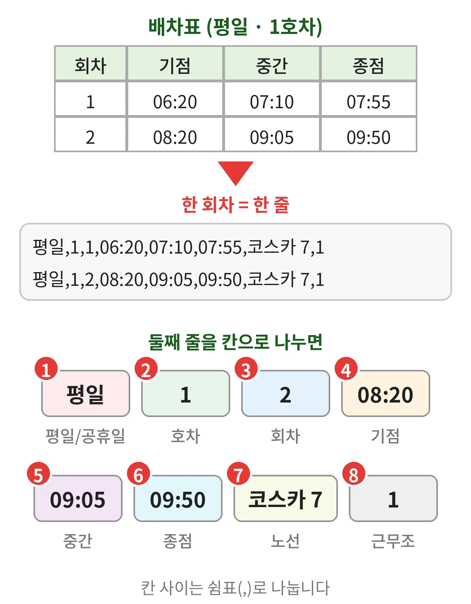
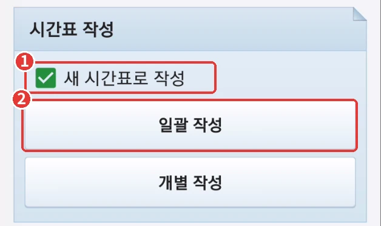
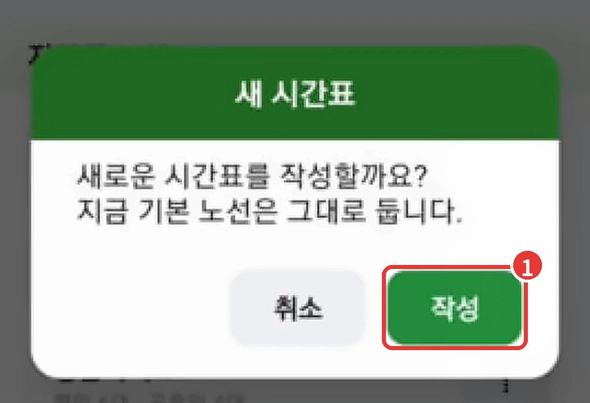
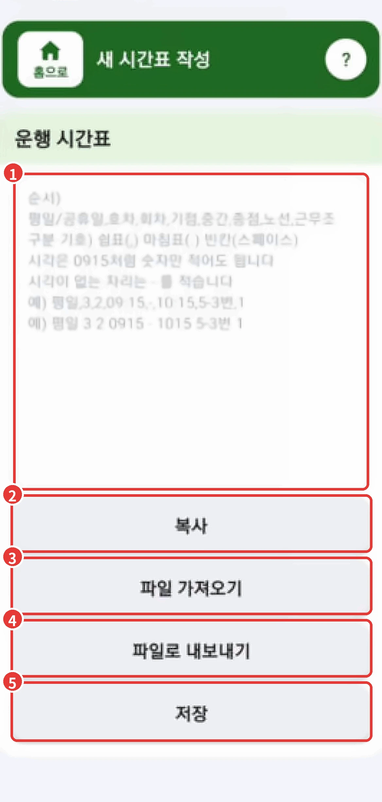
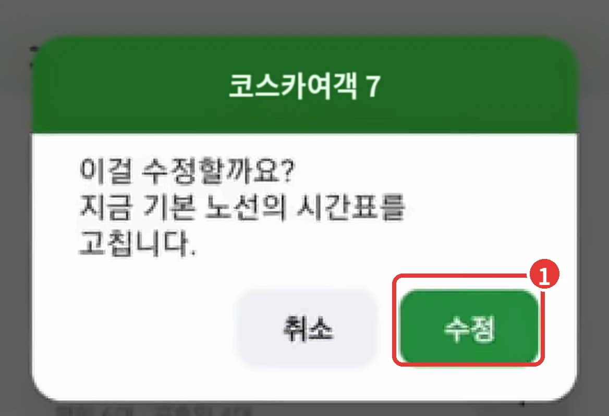
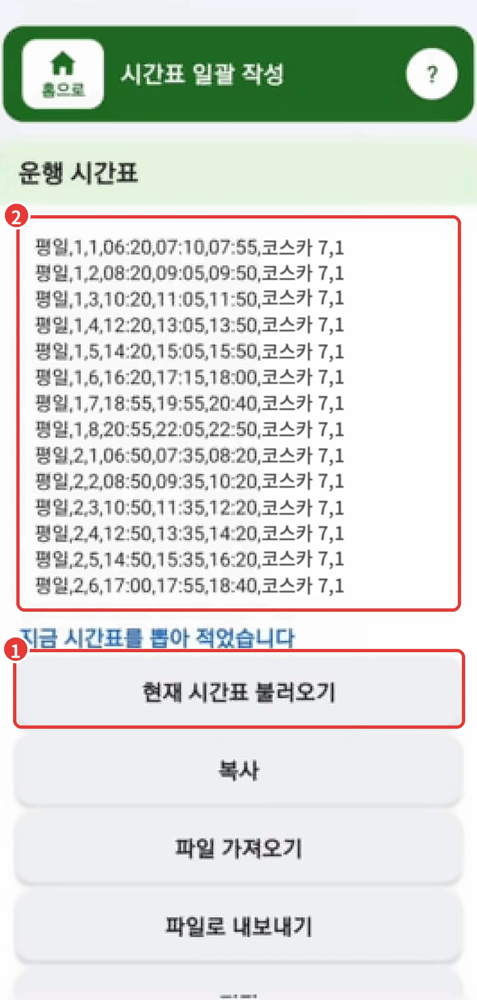

배차표의 한 회차를 한 줄로 적습니다. 칸은 쉼표(,)로 나눕니다.
① 평일 또는 공휴일
② 호차 번호
③ 회차 번호
④ 기점 출발 시각
⑤ 중간 도착 시각 (없으면 빼기 - , 알람 없음)
⑥ 중간 출발 시각 (없으면 빼기 - )
⑦ 종점 시각
⑧ 노선 이름
⑨ 근무조 (한 조만 있으면 1)

① 새 시간표로 작성에 체크가 있는지 봅니다. 새로 만들 때는 켜 둡니다.
② 일괄 작성을 누릅니다.

① "새로운 시간표를 작성할까요?"에서 작성을 누릅니다. 지금 기본 노선은 그대로 남습니다.

① 글 칸에 한 줄에 한 회차씩 적습니다. 흐린 글은 보기로 보여 주는 것이라 지우지 않아도 됩니다.
② 복사 : 적은 글을 복사합니다.
③ 파일 가져오기 : 파일 내용을 글 칸에 넣습니다. 저장을 눌러야 적용됩니다.
④ 파일로 내보내기 : 적은 글을 파일로 저장합니다.
⑤ 저장 : 틀린 줄이 있으면 몇째 줄인지 알려 주고 아무것도 넣지 않습니다. 맞으면 저장된 노선에 넣고, 바로 기본 노선으로 쓸지 묻습니다.

① "이걸 수정할까요?"에서 수정을 누릅니다.

① 현재 시간표 불러오기를 누르면
② 지금 시간표가 글로 펼쳐집니다. 고칠 줄만 고친 뒤 맨 아래 저장을 누릅니다.
저장하면 들어 있던 시간표를 모두 지우고 글 칸에 적은 것만 넣습니다. 적지 않은 쪽(예: 공휴일)은 비게 됩니다.